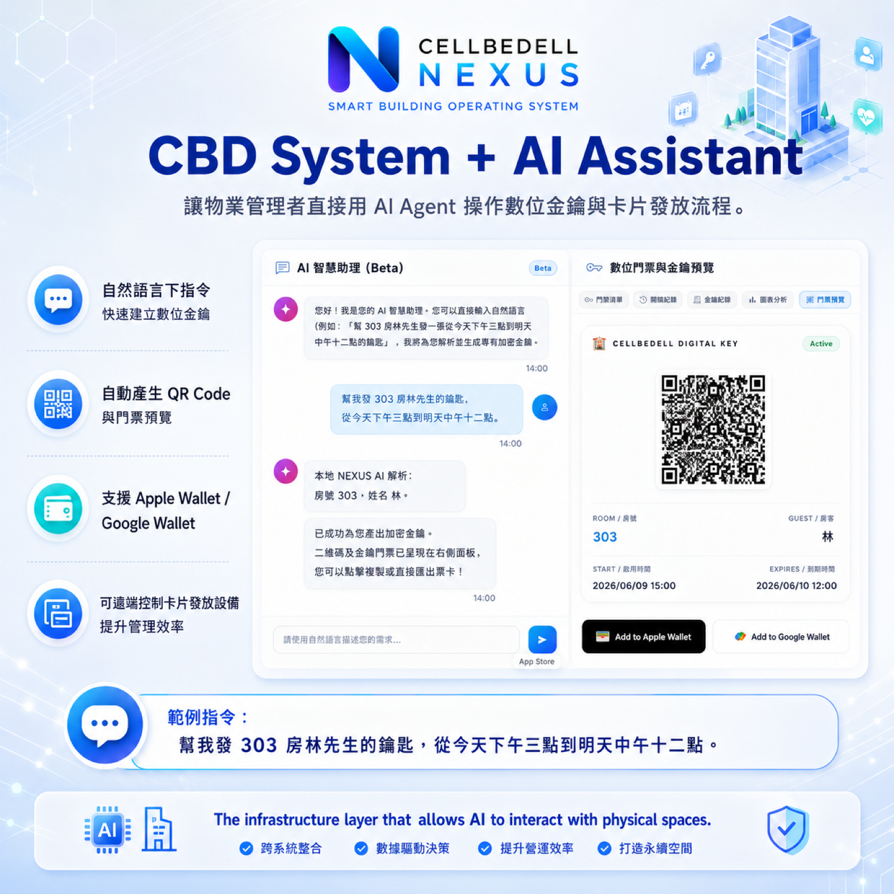

旅客完成報到後，最直覺的期待很簡單：拿到房卡、掃 QR Code，或用手機靠近門鎖就能進房。從旅客角度看，這是一個「可以開門」的瞬間。
但對旅宿現場來說，這個瞬間其實牽涉一整條資料與權限的交接。PMS 要知道這筆訂單是否有效，房號是否已分配，入住與退房時間是否正確；現場設備要知道可以發哪一張卡、開哪一扇門、有效到什麼時候；系統還要留下紀錄，方便之後查詢、撤回或處理例外。
而 AI Agent 會讓這條線再往前一步：管理者不一定要進到複雜後台逐欄設定，也可以用自然語言提出任務，例如「幫我發 303 房林先生的鑰匙，從今天下午三點到明天中午十二點」。Agent 負責理解需求、比對規則、產生任務；真正的發卡與開門，仍交給現場設備和權限系統執行。
所以智慧入住不能只停在 Kiosk 畫面。真正重要的是：PMS、AI Agent、發卡機與門禁設備能不能串成一條線，讓資料和人話都變成可以執行的權限。
PMS 是資料核心，但不是現場執行者

PMS 是旅宿營運的資料核心。它知道訂單從哪裡來、旅客住哪一天、房型是什麼、房號是否分配、付款狀態如何、房務是否放行。
但 PMS 本身不一定負責現場執行。它不會替旅客把房卡寫好，也不會自己打開門鎖。它更像是一個資料來源：告訴現場系統「這位旅客可以做什麼」，接著由 Kiosk、邊緣設備、發卡機與門禁設備把這件事執行出來。
這就是 PMS API 重要的地方。API 不是技術名詞而已，它代表旅宿能不能把「訂單資料」變成「現場任務」。如果 PMS 只能被人手動查詢，Kiosk 就只能像一台查詢機；如果 PMS 能把資料交給現場設備，Kiosk 才有機會真的發卡、開通權限與更新狀態。
AI Agent 是任務翻譯層，不是直接開門的人
在智慧旅宿裡，AI Agent 最有價值的位置，不是取代 PMS，也不是直接控制每一把門鎖。它比較像一個任務翻譯層：把管理者、櫃台人員或旅客說出的需求，轉成系統可以理解、可以審核、可以執行的任務。

例如管理者可以說：「幫我發 303 房林先生的鑰匙，從今天下午三點到明天中午十二點。」Agent 先解析房號、姓名、起訖時間與任務目的，再回到 PMS 或 CBD 系統檢查資料是否合理。確認後，它可以建立數位金鑰任務、產生 QR Code、預覽門票或 Wallet 憑證，最後交給現場設備或門禁系統執行。
這裡有一個重要邊界：Agent 不應該繞過安全規則直接開門。它要做的是建立任務、檢查條件、留下紀錄，並在需要時要求真人確認。真正的權限寫入、發卡、門禁判斷，仍然由 PMS API、邊緣設備、發卡機與門禁設備依照規則完成。
這樣的設計讓 AI 不只是客服聊天，而是成為旅宿營運裡的任務入口。人可以用比較自然的方式下指令；系統則用可追蹤的方式執行。
發卡機不是配件，而是權限寫入點
很多旅宿在看自助入住時，會先看 Kiosk 螢幕好不好看，卻比較晚才想到發卡機。可是對需要實體房卡的場域來說，發卡機才是把資料變成房卡的關鍵。
當 PMS 透過 API 傳來房號、入住日期、退房時間與旅客狀態，現場系統需要把這些資料轉成房卡可以理解的權限。這張卡不能只是「某張卡」，它應該對應到特定房間、特定時間、特定旅客任務。

這也是為什麼發卡流程需要被追蹤。哪一筆訂單發了哪張卡？卡片有效到什麼時候？如果旅客換房、延遲退房或遺失房卡，權限如何更新或撤回？這些都不是畫面設計問題，而是現場權限管理問題。
好的智慧入住，應該讓發卡機成為流程裡的一個任務節點，而不是一個被人工補上的外接配件。
門禁設備負責最後一公尺
旅客真正感受到智慧入住，是在門打開的那一刻。前面的 pre check-in、付款、Kiosk 確認與發卡，如果最後不能順利進門，整個流程都會被視為失敗。
門禁設備負責的是最後一公尺：房門、樓層、公區、電梯、辦公空間或會員區域。不同場域可能需要不同權限，例如只能進自己的房間、只能在入住期間進入樓層、只能在特定時段使用公區。

因此門禁不是單純的「開或不開」。它其實是在回答幾個問題：這個人是誰？現在是有效時間嗎？這個憑證可以進這個區域嗎？這次通行需要留下紀錄嗎？
當 PMS、Kiosk 與門禁沒有串起來，櫃台就會變成中間翻譯者：查訂單、看房號、手動發卡、再處理門禁問題。當它們串起來，系統就能把標準流程自動完成，把人留給真正需要判斷的例外。
邊緣設備讓現場不用每一步都等雲端
旅宿現場有一個很現實的問題：不能每一次取卡、開門或驗證都完全仰賴雲端即時回應。大廳網路不穩、房門附近訊號不好、設備短暫離線，都可能讓旅客卡住。
所以 Cellbedell 的架構會把關鍵判斷放到現場邊緣設備。雲端負責同步管理、紀錄與後台設定；現場邊緣設備負責把已授權的任務執行出來，例如確認 QR Code、指示發卡機寫卡，或讓門禁設備依照本地權限完成判斷。

這不是把雲端拿掉，而是把責任分清楚。雲端適合做管理與同步；現場設備適合做關鍵執行。對中小旅宿來說，這也讓部署更輕，不需要中央主機，也不需要另外放一台 host PC 長時間維護。
真正的 plug & play，不只是插上去會亮，而是設備接上後能進入既有流程：PMS 給資料、邊緣設備判斷、發卡機寫卡、門禁設備執行，最後把紀錄同步回系統。
Wallet、QR Code 與房卡應該是同一套權限邏輯
未來旅宿不會只有一種通行方式。有些旅客拿房卡，有些旅客用 Wallet Pass，有些旅客掃 QR Code，有些場域可能使用 NFC 或 Bluetooth。對旅客來說，這些只是不同的開門方式；對系統來說，它們應該共用同一套權限邏輯。

同一筆訂單，可以產生不同形式的憑證；但不應該產生多套互相矛盾的規則。房卡、QR Code、Wallet Pass 都應該知道同一件事：旅客住哪一間、何時開始有效、何時失效、可以進哪些區域。
這樣旅宿才有彈性。商務旅客可以用手機快速通行，家庭旅客可以拿房卡，短租或共享空間可以用 QR Code，管理者仍然能在同一個邏輯裡追蹤與撤回權限。
對中小旅宿來說，先串起一條線就夠了
很多中小旅宿一聽到 PMS、Kiosk、發卡機、門禁整合，會覺得這是一個很大的系統工程。但比較實際的做法，不是一次把所有東西重做，而是先把一條最重要的線接起來。
這條線可以很清楚：PMS 提供訂單與房號，AI Agent 把自然語言需求整理成任務，Kiosk 確認旅客與入住狀態，邊緣設備判斷是否可執行，發卡機或手機憑證產生權限，門禁設備在現場完成通行判斷，最後留下紀錄。
當這條線跑得穩，旅宿才有基礎延伸到更多服務：AI Agent 幫旅客建立任務、延遲退房自動更新權限、訪客通行、房務通知、會員錢包或加購服務。
智慧入住不是堆設備，而是把資料、權限與現場任務整理成可管理的流程。旅客不需要知道 PMS、API、邊緣運算或門禁規則怎麼運作；他只需要感覺這段入住更順。對旅宿來說，真正值得追的，是每一次取卡、每一次開門、每一次例外，都能被系統理解、執行與留下紀錄。